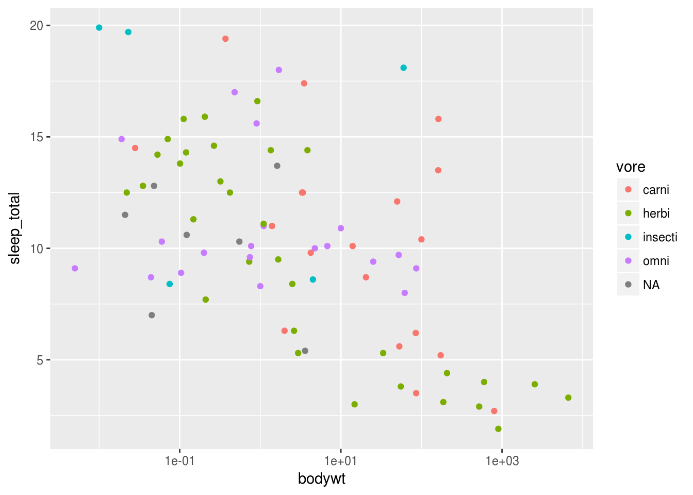
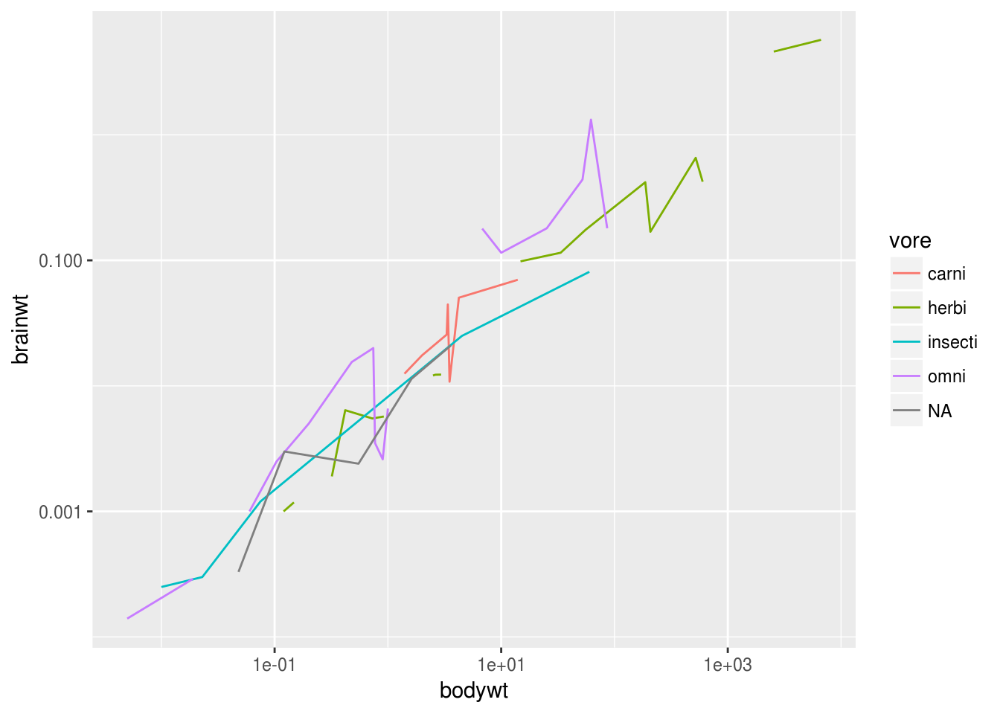

Pretty plots with ggplot2
ggplot2 is a plotting framework that is (relatively) easy to use, powerful, AND it looks good.
library(ggplot2)
# Load the example data
data <- msleep
str(data)## Classes 'tbl_df', 'tbl' and 'data.frame': 83 obs. of 11 variables:
## $ name : chr "Cheetah" "Owl monkey" "Mountain beaver" "Greater short-tailed shrew" ...
## $ genus : chr "Acinonyx" "Aotus" "Aplodontia" "Blarina" ...
## $ vore : chr "carni" "omni" "herbi" "omni" ...
## $ order : chr "Carnivora" "Primates" "Rodentia" "Soricomorpha" ...
## $ conservation: chr "lc" NA "nt" "lc" ...
## $ sleep_total : num 12.1 17 14.4 14.9 4 14.4 8.7 7 10.1 3 ...
## $ sleep_rem : num NA 1.8 2.4 2.3 0.7 2.2 1.4 NA 2.9 NA ...
## $ sleep_cycle : num NA NA NA 0.133 0.667 ...
## $ awake : num 11.9 7 9.6 9.1 20 9.6 15.3 17 13.9 21 ...
## $ brainwt : num NA 0.0155 NA 0.00029 0.423 NA NA NA 0.07 0.0982 ...
## $ bodywt : num 50 0.48 1.35 0.019 600 ...It’s sleep data of some kind. Anyhow, let’s start. ggplot2 revolves around a certain kind of variable: the ggplot2 object. What is a ggplot2 object? Basically it is your data + information on how to interpret it + the actual geometry it uses to plot it.
How to create ggplot2 objects
You can add as much data in the inital function call as you want. All of these work, but the final version is the only “complete” object that fully specifies the data used for the plot.
ref <- ggplot()
ref <- ggplot(data)
ref <- ggplot(data, aes(x = bodywt, y = sleep_total))
# This is the same thing as the line above:
ref <- ggplot(data, aes(x = data$bodywt, y = data$sleep_total))To store an object (to add to it later/plot it on demand), just give it a reference. Simply typing the reference will display the plot (if you’ve provided enough information to make it.)
refAs you can see, we haven’t specified everything we need yet. There are 3 components to making a plot with a ggplot object: your data, the aesthetic mappings of your data, and the geometry. If you are missing one, you won’t get a functional plot.
Your data should be a dataframe with everything you want to plot. Note that it is possible to put data from multiple sources (ie. different dataframes) in the same plot, but it’s easier if everything is in the same 2-dimensional dataframe.
ref <- ggplot(data)The aesthetic mappings tell ggplot2 how to interpret your data. Which values in your dataframe are the y-values, x-values, what should be used for colors, etc.
ref <- ggplot(data, aes(x = bodywt, y = sleep_total))The geometry is the actual stuff that goes on the plot. You can specify any geometry as long as you have supplied the values it needs. If you’ve specified the required aesthetic mappings (which data corresponds to x, y, etc.), all you need to do is tell ggplot2 to create a certain geometry- for instance a scatterplot.
Just add the geometry you want to your object. In this case, we are making a scatterplot.
ref <- ggplot(data, aes(x = bodywt, y = sleep_total)) + geom_point()
refAdding additional elements
All you need to do to add more information to your plot/change things is add on more elements. Lets add a logarithmic scale on the x axis.
ref <- ggplot(data, aes(x = bodywt, y = sleep_total)) + geom_point() + scale_x_log10()
refLets add a smoothed mean.
ref + geom_smooth()## `geom_smooth()` using method = 'loess'
You can also specify aesthetics inside the call to create geomtery.
ggplot(data) + geom_point(aes(x = bodywt, y = sleep_total)) + scale_x_log10() + geom_smooth()Error: stat_smooth requires the following missing aesthetics: x, yWhy didn’t that work? This is because when we specfy aesthetics inside a call to geomtery it only applies for that layer (only geom_point got the x and y values). The only information that gets passed to all geometery calls is aethetics specified in the initial creation of the ggplot object.
So if we wanted that to work, we’d have to do this:
ggplot(data) + scale_x_log10() +
geom_point(aes(x = bodywt, y = sleep_total)) +
geom_smooth(aes(x = bodywt, y = sleep_total))## `geom_smooth()` using method = 'loess'It’s important to note that geometry will automatically use any aesthetic mappings that it understands, and ignore ones it doesn’t. So if you specify as much stuff as you can in the inital call that can be used, it’ll save you work.
Like this:
ggplot(data, aes(x = bodywt, y = sleep_total)) + scale_x_log10() + geom_point() + geom_smooth()## `geom_smooth()` using method = 'loess'
Exercise - Creating a plot of our own
Make a scatterplot of conservation status vs. time spent awake
Hint: conservation status is "data$conservation" and time awake is "data$awake". To make a scatterplot, use "geom_point()".
Adding additional mappings
Let’s follow up with a few very common plot/geometry types and mappings you might be interested in:
These x and y mappings (and the log scale on the x axis will be used for all later plots).
plot <- ggplot(data, aes(x = bodywt, y = sleep_total)) + scale_x_log10()
plot + geom_point()
Color
First lets add color based on what things eat. Note that it automatically adds a legend.
plot + geom_point(aes(color = vore))
We used a factor there, but we can also use a continuous variable for color as well.
plot + geom_point(aes(color = log(brainwt)))We can change the legend to change the colors in this case.
plot + geom_point(aes(color = log(brainwt))) + scale_color_gradient2()Scale limits
Set the limits of a scale
plot + geom_point() + scale_y_continuous(limits = c(5, 15))## Warning: Removed 23 rows containing missing values (geom_point).Size and transparency
Changing size and transparency (alpha) works the same way:
plot + geom_point(aes(size = sleep_rem, alpha = sleep_rem)) +
xlab("this is our x axis") + ylab("this is our y axis") + ggtitle("title") + scale_alpha("our legend")## Warning: Removed 22 rows containing missing values (geom_point).If we want to simply change a plot value like marker shape or size without mapping it to data, just specify it outside the call to aesthetics.
plot + geom_point(aes(shape = vore), size = 6, color = "orange")## Warning: Removed 7 rows containing missing values (geom_point).Faceting
Let’s facet our data by a factor:
plot + geom_point() + facet_wrap(~vore)Exercise - Another plot example
How would I make a scatterplot of conservation status (data$conservation) vs time awake (data$awake), with the color mapped to vore (data$vore) and the size mapped to the log of brain weight (log(data$brainwt)). Bonus points if you add axis labels and a title.
Other types of plots
All other types of plots work identically to the scatterplot - let’s see a few examples…
Boxplot
Note that stats are automatically performed.
ggplot(data, aes(x = vore, y = sleep_total, fill = vore)) + geom_boxplot()Line plot with different groups
ggplot(data, aes(x = bodywt, y = brainwt, group = vore, color = vore)) +
geom_line() + scale_x_log10() + scale_y_log10()## Warning: Removed 8 rows containing missing values (geom_path).
1D density
ggplot(data, aes(x = sleep_total, fill = vore)) + geom_density(alpha = 0.5)Violin plot
ggplot(data, aes(x = vore, y = sleep_total)) + geom_violin()Bar plot
ggplot(data, aes(x = vore)) + geom_bar()Note that it automatically is binning the number of values in “vore”. To get a bar plot to simply plot the values you feed it, use geom_bar(stat = "identity").
Exercise - Making other types of plots
Make a box plot of the amount of sleep (data$sleep_total) per conservation status (data$conservation). Fill in the box plot colors by conservation status (data$conservation).
Hint: you will need the following aesthetics: x, y, and fill. The geometry you want to use is geom_boxplot()
Changing how plots look
Chances are, you might not be instantly “in love” with ggplot2’s default theme. Fear not - there are several other themes you can use to choose from. Using the gapminder dataset as an example, let’s check out several different themes.
Default theme
This is ggplot2’s default theme. You get a big grey background on everything:
library(gapminder)
ggplot(gapminder, aes(x=year, y=lifeExp, group=year)) + geom_boxplot()Classic theme
A more traditional, minimal theme. This is my personal favorite and I use it for everything:
library(gapminder)
ggplot(gapminder, aes(x=year, y=lifeExp, group=year)) + geom_boxplot() +
theme_classic()Light theme
Like the normal theme, but has light grey grid lines and a light background.
library(gapminder)
ggplot(gapminder, aes(x=year, y=lifeExp, group=year)) + geom_boxplot() +
theme_light()Void theme
Gives you absolutely nothing but your plot geometry:
library(gapminder)
ggplot(gapminder, aes(x=year, y=lifeExp, group=year)) + geom_boxplot() +
theme_void()For some additional themes, check out the ggthemes package.
© Jeff Stafford // https://jstaf.github.io/r-data-science/